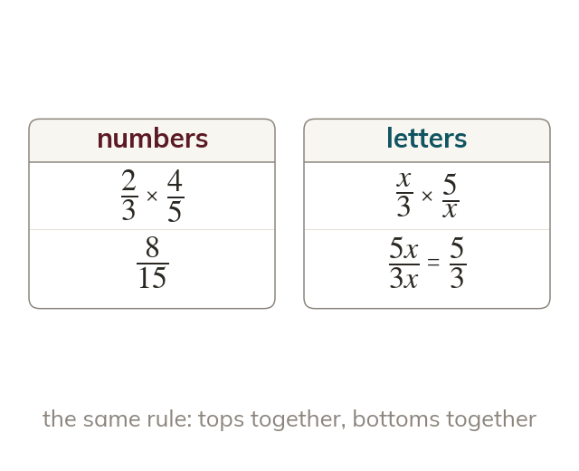

Multiplying algebraic fractions
Multiply algebraic fractions like number fractions: tops together, bottoms together. Cancel common factors first where you can.
Two algebraic fractions multiply exactly as numerical fractions do - the numerators make the new numerator and the denominators make the new denominator, e.g.
So Where possible, cancel common factors before multiplying, not just after, to keep the numbers and expressions smaller and more manageable.
So Where possible, cancel common factors before multiplying, not just after, to keep the numbers and expressions smaller and more manageable.